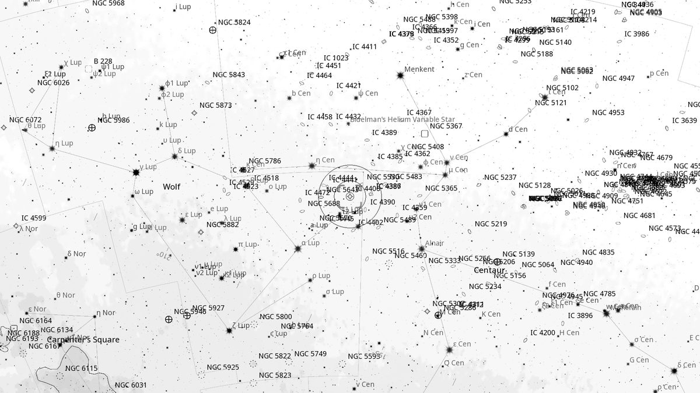
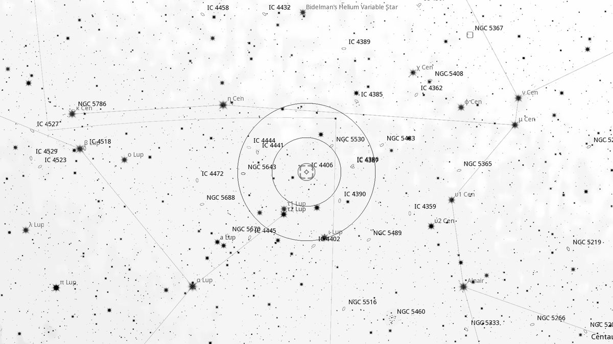
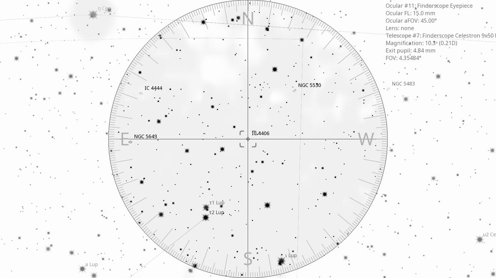
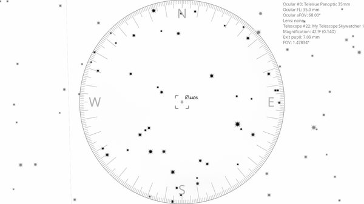

IC 4406 (PN)
Planetary Nebula in Lupus
| R.A. | Dec. | Size | Mag | SB | Cnt.St | Type | Distance | Chart |
|---|---|---|---|---|---|---|---|---|
| 14h 22m 28.1s | -44° 09′ 09.5″ | 20′′ | 10.2 | 7.5 | -- | PN | -- | -- |

Source: POSS-2 UK Schmidt Red (STScI) | Field: 10′ × 10′
Background
IC 4406 is the “Retina Nebula” — a planetary nebula 2,000 light-years away in Lupus. Famous for HST imagery showing intricate dust tendrils giving the appearance of an eye's retina. The nebula is approximately a torus seen edge-on.
My Observing Notes
25-cm (Meade 10-inch LX200, The Coffee Grinder): Find via two perpendicular lines: one through η and θ Lup, the other perpendicular from β Cen. In the finderscope, η and θ Lup plus two other bright stars triangulate to the planetary's location. OIII filter confirms. In the eyepiece a small slightly elongated blue-grey disk, looking more galaxy-like than planetary; averted vision seems to expand the disk.(Saturday, August 2025)
References
Charts

Ultra-wide view (~25° field)

Wide-field view with Telrad rings (4°, 2°, 0.5°)

Finderscope view (9×50 RACI, ~4.4° TFOV)

Eyepiece view — 35 mm Panoptic on 12-inch f/5 (1.6° TFOV)